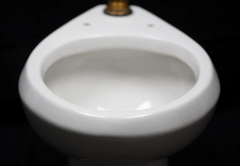

-

新型涂层可以减少冲马桶耗水
2019-12-25- 科学家研究出了一种可以实现马桶高效清洁的涂层，有望减少马桶耗水。
-
未来将属于二维材料时代
2019-12-25- 2010年诺贝尔物理学奖获得者、英国曼彻斯特大学物理学教授安德烈·海姆...
-
中国科学家“种”出大钻石
2019-12-25- 关于钻石，有一句几乎家喻户晓的广告语：“钻石恒久远，一颗永流传。”钻石...
-
科学家开发从空气中分离二氧化碳的新装置
2019-12-25- 麻省理工学院的研究人员开发了一款耗能少且经济的装置，可以从空气中分离...
-

英国团队开发出可用于智能设备的“人造皮肤”
2019-12-25- 英国布里斯托大学的研究团队开发出一种仿人类皮肤的薄膜...
-

科学家制造出可以合成气体燃料的人工叶片
2019-12-25- 最近，科学家从植物中获得灵感，模拟光合作用制造了一种人工叶片。其包...
-
中国科学家制造连续的无机材料
2019-12-25- 科学家研究出了将一杯浓盐水持续加热蒸发，过一会儿就会陆续出...
-
用细菌盖成的房子，你想住吗？
2019-12-25- 未来，房屋说不定会变得神奇起来，有蓝藻盖的房子，也有芽孢杆...
最新研究

- Science 一周论文导读 2019/12/24
- Science 一周论文导读 2019/12/24
- Science 一周论文导读 2019/12/24
视频